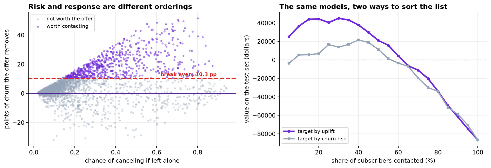
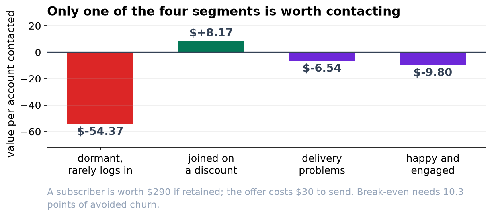

Risk, Uplift and What an Explanation Method Is Claiming
Three model families separated by 0.0009 of AUC. A feature that moves five places when a correlated column is dropped. Two explanation methods that disagree half the time. And a targeting rule worth twice the money.
1. Data, cleaning and eligibility
The export held 24,380 rows. A duplicated block of 380 was removed on subscriber_id. last_rating codes never-rated as -1, which is not a marker pandas recognizes and which would otherwise enter the model as a rating below the scale; those 412 accounts were flagged and the rating imputed at the median. A further 359 accounts have tenure_months = 0, having opened inside the window, so a 90-day churn was impossible and their outcome is zero by construction; they were excluded because retaining them would teach the model that very short tenure predicts staying.
That leaves 23,641 eligible accounts, 19.7 percent of which canceled.
2. Randomization check
Standardized differences across the two arms were computed for all thirteen numeric covariates. The largest absolute value is 0.018, against a conventional balance threshold of 0.10. The assignment behaves as described, so the arm difference is an unbiased estimate of the average treatment effect and no adjustment is required.
3. The campaign as run
| Quantity | Value |
|---|---|
| Churn, offered arm | 0.1681 (n = 11,917) |
| Churn, control arm | 0.2255 (n = 11,724) |
| Average treatment effect | -5.74 pp, 95% CI [-6.76, -4.73] |
| Margin recovered per targeted account | 0.0574 × $290 = $16.66 |
| Offer cost per targeted account | $30.00 |
| Net per targeted account | -$13.34 |
| Total over the offered arm | -$158,998 |
Break-even uplift is 30/290 = 0.1034. The unconditional effect is 0.0574, so blanket targeting is unprofitable by construction, and this was determinable from two numbers before any model was fitted.
4. Risk model bake-off
The risk model estimates the probability of churn under no treatment, so it is fitted on the control arm only and evaluated on control test rows. Nineteen features after one-hot encoding of region and signup channel.
| Model | ROC-AUC | PR-AUC | Brier |
|---|---|---|---|
| Logistic regression | 0.8137 | 0.6130 | 0.13132 |
| Random forest (400 trees, min leaf 25) | 0.8146 | 0.6189 | 0.13390 |
| HistGradientBoosting (300 iters, lr 0.02, 8 leaves) | 0.8145 | 0.6169 | 0.13056 |
The data-generating process contains genuine non-additive structure (an early-life churn spike in tenure, an interaction between delivery failures and short tenure, and a threshold effect at a rating of 2), which is why the ensembles are not behind the linear model. They are also not meaningfully ahead. Gradient boosting was carried forward for the SHAP and uplift work.
5. What the SHAP importances do and do not say
Global mean absolute SHAP on the risk model ranks tenure, last rating, skipped weeks and delivery issues at the top, with support_contacts_90d tenth of nineteen at 0.0311. Refitting without delivery_issues_90d moves support contacts to 0.1784, sixth of eighteen, a 5.7-fold increase, while ROC-AUC falls only from 0.8145 to 0.8073. The two columns correlate at 0.614 because support calls are generated by delivery failures.
The lesson is standard and routinely ignored in practice: a SHAP importance is a marginal contribution given the other features in the model, not a measure of how much the underlying quantity matters. It is not a ranking of levers, and the cheapest way to move a symptom feature is usually to stop measuring the symptom.
6. SHAP against LIME
On sixty test subscribers with predicted risk between 0.35 and 0.75, the two methods name a different single largest driver for 31 of them, 52 percent. For the example carried in the chapter, SHAP ranks delivery issues first (+0.617) and LIME ranks tenure first (+0.144), with delivery issues second.
This is expected rather than anomalous. SHAP allocates the prediction by a Shapley-value rule over feature coalitions; LIME fits a weighted local surrogate to perturbed samples and is sensitive to the perturbation distribution and the discretization. Both describe the model's response surface. Neither licenses a causal statement about the subscriber, and presenting either to a business audience as a reason for cancellation is the error this section exists to prevent.
7. Uplift estimation and evaluation
A two-model (T-learner) approach was used: gradient boosting fitted separately on each arm of the training split, with uplift taken as the control-arm predicted probability minus the treated-arm predicted probability. Estimated uplift ranges from -0.454 to +0.540, and 18.6 percent of subscribers have a negative estimate.
| Feature | Correlation with risk | Correlation with uplift |
|---|---|---|
| delivery_issues_90d | +0.543 | -0.192 |
| support_contacts_90d | +0.369 | -0.179 |
| last_rating | -0.586 | +0.103 |
| signup_discount | +0.238 | +0.418 |
| skips_90d | +0.426 | +0.515 |
| tenure_months | -0.334 | -0.210 |
Evaluation is by direct measurement rather than by model. Because assignment is random and every targeting rule is a function of pre-treatment features only, the offered and control accounts inside any selected set remain comparable, so the incremental value of a rule is estimated as the within-set arm difference times the margin, less the offer cost times the number selected.
| Contact the top | Risk-ranked value | Uplift-ranked value |
|---|---|---|
| 10% | $5,244 | $36,499 |
| 20% | $6,735 | $44,261 |
| 30% | $13,788 | $44,990 |
| 40% | $21,519 | $37,794 |
| 50% | $11,320 | $20,989 |
| 70% | -$19,679 | -$11,138 |
| 100% | -$86,636 | -$86,636 |
Each rule at its own optimum: risk-ranked, top 40 percent, $21,519; uplift-ranked, top 30 percent, $44,990. Against the campaign as run the improvement is $131,626 on the test set, or $376,046 scaled to the 23,641 eligible accounts.

8. Segment estimates
| Segment | n | Control churn | Effect [95% CI] | Value/account |
|---|---|---|---|---|
| Dormant: tenure > 18m, ≤ 3 logins, autopay | 537 | 0.132 | +8.40 pp [+2.01, +14.80] worse | -$54.37 |
| Signed up on a discount | 3,409 | 0.298 | -13.16 pp [-15.97, -10.36] | +$8.17 |
| Two or more delivery issues | 1,321 | 0.486 | -8.09 pp [-13.45, -2.73] | -$6.54 |
| Rated 5, four or more logins | 1,509 | 0.097 | -6.97 pp [-9.39, -4.54] | -$9.80 |
The dormant estimate is the one that changes behavior rather than confirming it. The interval excludes zero, and the mechanism is plausible and dull: a message about a subscription is a reminder that the subscription exists. It is nonetheless a subgroup analysis on 537 accounts, and the appropriate response is to stop sending to that group and to confirm with a designed test rather than to encode a permanent exclusion.

9. Limitations
Everything estimated here is specific to this offer. A different intervention, particularly a service remedy rather than a discount, could plausibly have a positive effect on the delivery-issues segment, where the current estimate falls just short of break-even.
The uplift score is a difference of two model predictions and inherits both models' error, which is why the quartile and segment tables are measured against randomized controls rather than read off the model. The model is used to sort; the measurement establishes the value.
The 290-dollar margin and 30-dollar offer cost are supplied figures rather than estimates with uncertainty attached. Break-even moves proportionally with their ratio, and a sensitivity analysis across a plausible range for both would be a reasonable addition before the policy is fixed.
Finally, the segments in section 8 were chosen partly because they are interpretable and partly after seeing the uplift model's tails. They should be treated as descriptions of a pattern the model found, with the confirmatory work still to do.